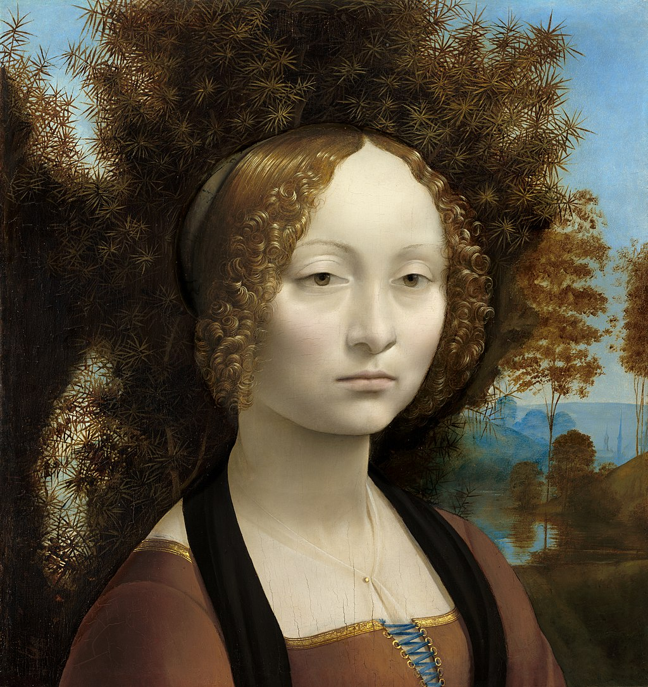

<head>
<meta charset="UTF-8" />
<meta name="keywords" content="drawing, painting" />
<meta name="description" content="drawings by Sunjy" />
<title>Sunjy</title>
<link rel="shortcut icon" type="image/x-icon" href="../../mImages/mCommon/favicon.ico" media="screen" />
<link rel="stylesheet" type="text/css" href="../../mCsses/mCommon/mCssA.css" />
<link rel="stylesheet" type="text/css" href="../../mCsses/mCommon/mCssB.css" />
<link rel="stylesheet" type="text/css" href="../../mCsses/mCommon/mCssC.css" />
<link rel="stylesheet" type="text/css" href="../../mCsses/mCommon/mCssD.css" />
<link rel="stylesheet" type="text/css" href="../../mCsses/mContent/mCssA.css" />
<link rel="stylesheet" type="text/css" href="../../mCsses/mContent/mCssB.css" />
<link rel="stylesheet" type="text/css" href="../../mCsses/mContent/mCssC.css" />
<link rel="stylesheet" type="text/css" href="../../mCsses/mContent/mCssD.css" />
</head>
<script type="text/javascript" src="../../mScripts/mContent/mContentAA.js" /></script>
<script type="text/javascript" src="../../mScripts/mContent/mContentAB.js" /></script>
<script type="text/javascript" src="../../mScripts/mContent/mContentAC.js" /></script>
<script type="text/javascript" src="../../mScripts/mContent/mContentAD.js" /></script>
<script type="text/javascript"></script> 
<script type="text/javascript">
document.write('<div class="mImgAbsolute"></div>');
/*
document.write('<p class="mFontSizeBColor" />From a white paper...</p>');
document.write('<table class="center"><tr><td>');
document.write('');
document.write('</td></tr></table>');
*/
</script>


<script type="text/javascript">
document.write('<p class="mFontSizeBColor" />Ginevra de’ Benci</p>');
document.write('<p class="mFontSizeSColor" />By Leonardo da Vinci. “Ginevra de’ Benci” depicts a well-known young Florentine aristocrat. Leonardo painted the portrait in Florence in 1474 to commemorate Ginevra’s marriage at the age of 16.<br><br>The juniper bush that fills much of the background was regarded as a symbol of female virtue, in Renaissance Italy, while the Italian word for juniper, echo’s Ginevra’s name.<br><br>Ginevra is shown beautiful but reserved with no hint of a smile. Her gaze, although forward, seems indifferent to the viewer.<br><br>The reverse of the panel is decorated with a juniper sprig encircled by a wreath of laurel and palm and is memorialized by the phrase “beauty adorns virtue.”<br><br>This motto symbolizes Ginevra’s intellectual and moral virtue aligned with her physical beauty. The juniper, encircled by laurel and palm, suggests her name.<br><br>The laurel and palm are in the personal emblem of a Venetian ambassador to Florence, whose platonic relationship with Ginevra is revealed in poems exchanged between them.<br><br>An infrared examination has revealed the ambassador’s motto “Virtue and Honor” beneath Ginevra’s motto, making it most probable that the ambassador was somehow involved in the commission of this portrait.<br><br>As a woman of renowned beauty, Ginevra de’ Benci was also the subject of poems written by other prominent members of Florence, including the Medici family and Lorenzo de’ Medici.</p>');
document.write('<table class="center" /><tr><td>');
document.write('<br>The juniper bush that fills much of the background was regarded as a symbol of female virtue, in Renaissance Italy, while the Italian word for juniper, echo’s Ginevra’s name.<br><br>Ginevra is shown beautiful but reserved with no hint of a smile. Her gaze, although forward, seems indifferent to the viewer.<br><br>The reverse of the panel is decorated with a juniper sprig encircled by a wreath of laurel and palm and is memorialized by the phrase “beauty adorns virtue.”<br><br>This motto symbolizes Ginevra’s intellectual and moral virtue aligned with her physical beauty. The juniper, encircled by laurel and palm, suggests her name.<br><br>The laurel and palm are in the personal emblem of a Venetian ambassador to Florence, whose platonic relationship with Ginevra is revealed in poems exchanged between them.<br><br>An infrared examination has revealed the ambassador’s motto “Virtue and Honor” beneath Ginevra’s motto, making it most probable that the ambassador was somehow involved in the commission of this portrait.<br><br>As a woman of renowned beauty, Ginevra de’ Benci was also the subject of poems written by other prominent members of Florence, including the Medici family and Lorenzo de’ Medici." />');
document.write('</td></tr></table>');
</script>


